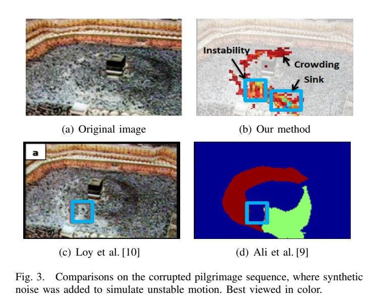

Crowd Management and Anomaly Detection
INFO
It is common for CCTV operators to overlook inter- esting events taking place within the crowd due to large number of people in the crowded scene (i.e. marathon, rally). Thus, there is a dire need to automate the detection of salient crowd regions acquiring immediate attention for a more effective and proactive surveillance. This paper proposes a novel framework to identify and localize salient regions in a crowd scene, by transforming low-level features extracted from crowd motion field into a global similarity structure. The global similarity structure representation allows the discovery of the intrinsic manifold of the motion dynamics, which could not be captured by the low-level representation. Ranking is then performed on the global similarity structure to identify a set of extrema. The proposed approach is unsupervised so learning stage is eliminated. Experimental results on public datasets demonstrates the effectiveness of exploiting such extrema in identifying salient regions in various crowd scenarios that exhibit crowding, local irregular motion, and unique motion areas such as sources and sinks.
Idea
Related Work
Existing methods can be divided into two main approaches. The first approach analyzes crowd behaviors or activities based on the motion of individuals, where tracking of their trajectories is required. Commonly, the tracking approaches keep track of each individual motion and further apply a statistical model of the trajectories to identify the semantics or geometric structures of the scene, such as the walking paths, sources and sinks. Then, the learned semantics are compared to the query trajectories to detect anomaly. While in principle individuals should be tracked from the time they enter a scene, till the time they exit the scene to infer such semantics, it is inevitable that tracking tends to fail due to occlusion, clutter background and irregular motion in the crowded scenes. Therefore, the aforementioned methods work well, up to a certain extent, in sparse crowd scenes. They tend to fail in dense crowd scenes, where target tracking is extremely challenging.
Detection and Localization
PROPOSED FRAMEWORK
A. Crowd Motion Field
B. Feature Representation
C. Saliency Detection by Manifold Ranking
EXPERIMENTS
We used the benchmark datasets obtained from data to evaluate
the proposed framework. The sequences are diverse,
representing dense crowd in the public spaces

EXPERIMENTS
We used the benchmark datasets obtained from data to evaluate the proposed framework. The sequences are diverse, representing dense crowd in the public spaces
various scenarios such as pilgrimage, station, marathon, rallies and stadium. In addition, the sequences have different field of views, resolutions, and exhibit a multitude of motion behaviors that cover both the obvious and subtle instabilities.
A. Qualitative Analysis
Instability Detection: A set of two sequences comprising a pilgrimage and marathon scenes were used to test the capa- bility of the proposed system in detecting instability. Following the studies, we introduced synthetic noise into the 2 sequences to simulate the unstable region as enclosed in the blue bounding box shown in Fig. 3 and the red box in Fig. 4, respectively. We observe that all three methods ( [9], [10] and ours) are able to identify the unstable region. However, in addition to the synthetic noise, our proposed method is able to identify other regions that exhibit unique motion dynamics as highlighted by the colored regions. After scrutinizing our results, we notice that these areas correspond to the exit and turning point around the Kaaba in Fig. 3, where there is potential slowdown in the pace of individuals, thus resulting in salient motion dynamics within these regions. Similarly, the proposed method is able to detect the sink region in the marathon sequence in Fig. 4, where the crowd exit from the field of view. The results demonstrate the effectiveness of the global similarity structure in capturing the intrinsic structure of the crowd motion.
B. Quantitative Analysis
We compared our detections against manually labeled in- teresting regions from all the sequences obtained from the public datasets. Most of the related studies [9], [10], merely provide qualitative results and the implementations are not shared publicly; leading to difficulties in performing a compre- hensive evaluation quantitatively. We determined the regions with interesting motion dynamics as per video basis and we employed the F-measure according to the score measurement of the well-known PASCAL challenge. That is, if the detected region overlaps the ground truth region by more than 50%, then the detection is considered as the correct salient region.

Expected Results and Possible Outcome
CONCLUSION
We have demonstrated that the transformation of the low-level flow field descriptors, stability and phase changes, into the global similarity structure, is an effective indicator for salient motion dynamics and irregularities in the crowded scenes. In particular, experimental results have shown that the method is effective in detecting sources and sinks, crowding, and local irregular motions from various surveillance scenar- ios. Importantly, accurate detection is achieved in the crowded scenes without tracking, prior information or model learning. Though the manifold projection is capable of discovering intrinsic structure of the motion dynamics, the basis of our manifold is optical flow. Thus, it is limited by the known drawbacks of optical flow estimation. Future investigation includes identifying low-level features that are more robust towards characterising motion in extremely crowded scenes.